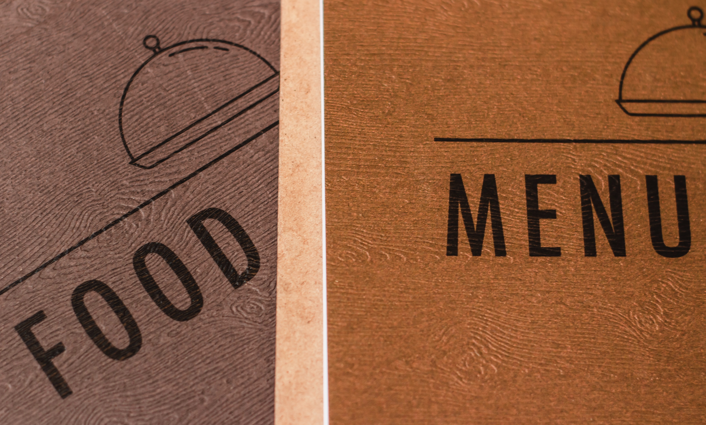

I command a set of skills tailored towards creating custom solutions for all sizes and budgets. I love solving problems, but even more so, I love creating solutions to problems and using my skills to increase workflow, sustainability, automation and management. I deeply enjoy work that allows me to blend my creative personality and my technical skills into a product that solves problems.
I pursed my education from my home here in the foothills of the Appalachian mountains. Aside from a deep interest and abiding love for technology and innovation, I also am deeply passionate about all things food, drink and hospitality. I've worked in several restaurants and hope to continue to expand my culinary skills for my entire lifetime. Additionally, I have a wide variety of automotive repair skills, earned through experience opening an automotive business with my father. I consider myself a life long weight lifter, and I hope my fitness habits keeps my mind and body sound for years to come. Working out cultivates my drive and spirit, and I hope to be able to use that drive to affect the world around me and other young athletes in a positive way, and fuel my desire to continue to self learn, pursue certifications, and acquire new skills in and out of the technology field.
Currently, I am refreshing and expanding my technological skill set. In the forseeable future I hope to expand my skill set into the data science, specifically Machine Learning and Deep learning! I am hooked by the idea that these fields are often used for Astronomy and space exploration. Everyday the possibility of the idea that I could one day use my skills set to be involved in exploring the'Final Frontier' drives me to pursue Udemy courses and private projects to expand my skills.
I am also extremely focused on producing projects and freelance work to demonstrate my full stack development or web developer skills. I know that these skills obtained through my education are the key to getting my foot into the door of the technology industry, the first crucial step in my dream mentioned above. I am viscously hungry to get my start, and I am determined to put in the work until (and after) I find my first position.
Here are some examples of projects, both academic and personal that I have completed. Since I am working to enter the industry, these are mostly private projects, or sites I have designed for friends, family, or myself! This is my first website, and I consider it to still be a project still under construction, as expand my web development skills.
Follow the picture link to a web scraper that I built in C#. It is designed to scrape the Allmenu's website for the names, prices, and descriptions off of a select number of menus in the city of Atlanta. This was the first personal project in a series of projects that I am using to attempting to break into Data Science skills.
